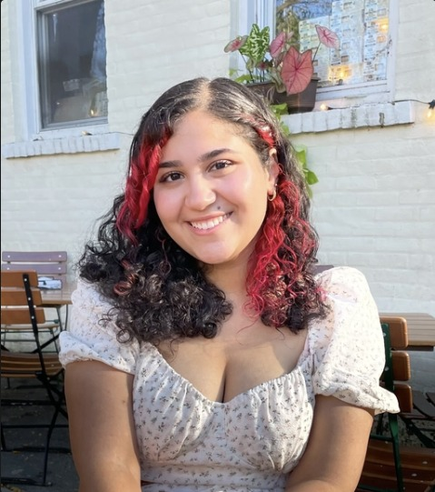

NYU Integrated Design & Media · Open to opportunities
Hi, I’m Kayla!
I’m a Creative Designer from New York City, making
I’m interested in how identity, culture, and lived experience can be expressed through hands-on making, visual design, and experimental media. My work takes on social justice issues, from beauty standards and medical bias to family separation and female autonomy.

Selected works
04 projects — click any to read the case study

About me
Brooklyn, NY · New York University
I make work that asks who gets believed, who gets seen, and who gets to decide.
I’m a graduate student in Integrated Design & Media at NYU, where I also completed my undergraduate degree. My practice moves between physical installations, graphic design, digital art, and video. Every project starts from a social justice question I care about and a belief that design can make people feel something they can’t ignore.
My style is maximalist, layered, and intentionally messy because lived experience rarely arrives in a clean grid. I pair that with research, real voices, and careful technical craft.